KICK STARTERS
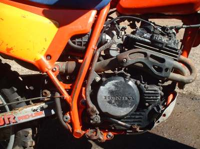
¶ To me, Kick Starters fall into two groups. Those you can fix easily and those you can't easily fix. Let's look at the hard to fix ones first.
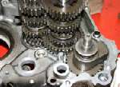 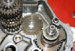
A slightly better way has the kicksarter return spring on the outside of the crankcase and everything else on the inside. At least with this arrangement you can replace the spring if it breaks.
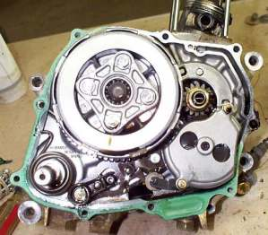
Kick Starter Spring outside the Crankcases.
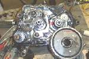 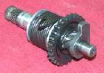
To work, the starter gear has to be able to lock in place when the Kick Starter is depressed and then unlock when the Kick Starter is released and the engine starts. There are a lot of ways to do this.
- Lateral Engagement Kick Starter
- Full Ratchet Kick Starter
- Pawl Ratchet Kick Starter
- Quadrant Gear Kick Starter
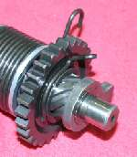 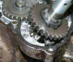
A Full Ratchet Kick Starter is another way to engage and disengage a starter gear. A beveled edged arm, or Ratchet Tab, is cast as part of the starter ratchet. This arm pushes against an angled metal lock out plate, when the Kick Starter is at rest, pushing the ratchet out of mesh with the starter gear. The starter gear is in mesh with the idler gear and spins with it freely. Pushed by a spring, when the Kick Starter shaft is turned, the ratchet locks with the starter gear turning the engine over, and starting the engine.
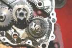 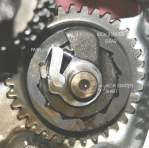
Lastly is a Quadrant Gear Kick Starter. It uses a kind of half gear that engages a Kick Starter pinion gear when the Kick Starter is rotated. This spring loaded pinion gear has ratchet teeth that allow it to lock up when turned in one direction and slip when turned in the opposite direction. Quadrant Gear style Kick Starter are used by a number of British, European, and American Motorcycle engines.
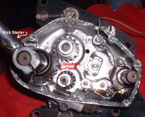 Triumph Quadrant Gear Kick Starter |
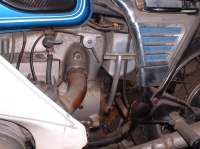 BMW Quadrant Gear Kick Starter |
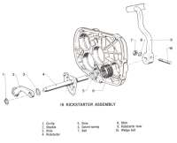 BMW Quadrant Gear Kick Starter Parts |
Most all Kick Starters use one of these four methods of engaging the Kick Starter gear. However, the details may vary a bit between manufacturers and even between different engines from the same manufacturer. Check your shop manual.
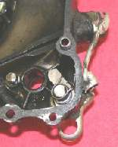 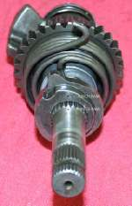
This gives you an idea as to how the Kick Starter works. The exact way is detailed in your shop manual but the general principles are all the same. The Kick Starter shaft must lock up when you kick it and unlock when you release it. I've seen some manufacturers of dirt bikes have five or six different variations of basically the same Kick Starter on their bikes. Why the changes, and they are all very minor changes, I cannot say. Got to be new and improved, right?
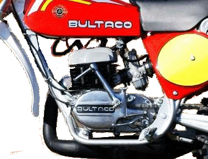 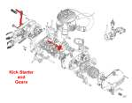
I don't particularly like Kick Starting with my left leg. You would think you would get used to it but I never could. It seems other people feel the same way as most bikes have the Kick Starter on the right side.
The power of the Kick Starter is channeled to the crank shaft of engine in one of two ways. At least I have only found two ways.
- Primary Drive Kick Starting.
- Transmission Drive Kick Starting.
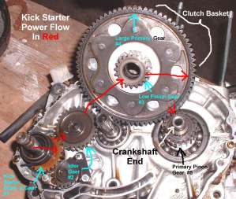 Primary Kick Starter |
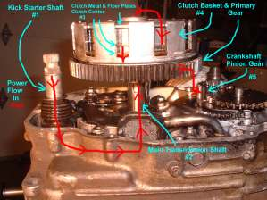 Transmission Kick Starter |
In the Primary Drive System the gear on the Kick Starter shaft (#1) moves and engages the Kick Start idler gear (#2) which turns a small Low Pinion gear (#3) on the Clutch Basket. The outside of the Clutch Basket has a larger Primary gear (#4) that engages the Primary Pinion gear (#5) on the Crankshaft. Because of this Low Pinion gear (#3) on the Clutch Basket, the power from the Kick Starter goes straight to the Crankshaft and NOT through any of the transmission shafts. That enables the engine to be started even with the clutch disengaged.
Starting while the engine is in gear is possible. That can be very handy if your engine dies on some steep dirt trail or the like. Your hanging there on the side of a mountain with a dead engine. It is somewhat difficult to shift down to neutral to restart your engine.
In the Transmission Drive System, at least that is what I call it. While there is an "Official" name for the Primary Drive Kick Starting system there is no name for the other system that I know of. So I dub thee the "Transmission Drive System."
So in the Transmission Drive System the power from the Kick Starter shaft (#1) gear engages the main transmission shaft (#2). The Transmission main shaft passes power through the Clutch Center, through the Clutch Plates (#3) to the Clutch Basket Primary gear (#4) and on to the Crankshaft (#5). If the clutch is engaged the power will continue to flow to the Crankshaft, turning the engine over with the Primary Pinion gear. If the Clutch is pulled in and disengaged, the engine will not turn over. This makes starting in gear almost impossible.
Well, yes, you could hold that front brake, give it a monumental kick, pull in the clutch just as it starts and not roll down that hill. Oh well, your right. it is much easier to roll, head over heels over motorcycle, on down that hill.
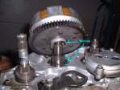 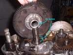
How do you tell which system you have? Easy, while in gear, pull in the clutch lever and kick. If nothing happens you have the Transmission Drive type. If the engine turns over, you have a Primary Drive type.
You got that? Lots of useless information here because whatever system you got, that is the system your stuck with. You can't change it. However, now you know how it works.
The Kick Starter must be able to spin the engine at least three or four hundred RPM. Most electronic ignition systems have an anti kick back feature that cut the ignition at low speeds.
Just about all the newer street bikes have no Kick Starter at all. I guess they think we are all wimps and can't Kick Start our bikes in an emergency. Maybe they are right. All the movies I see now, have the big, bad, biker gang types, who run out, jump on their bikes and hit the button. It just isn't the same as when they Kick Started them!
For lots of exploded Kick Starter views to study click Here.

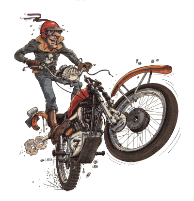 |
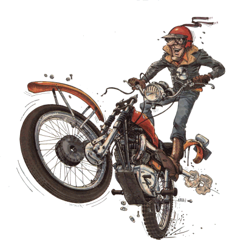 |
Copyright © 1999-2015 dansmc.com. All rights reserved.